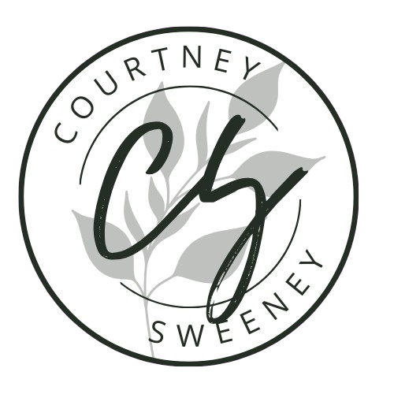
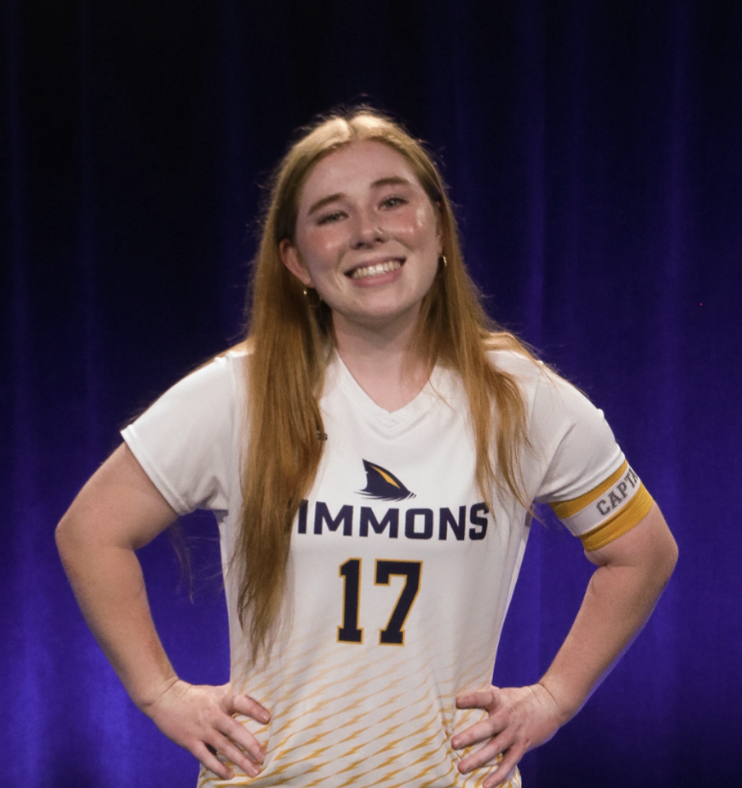
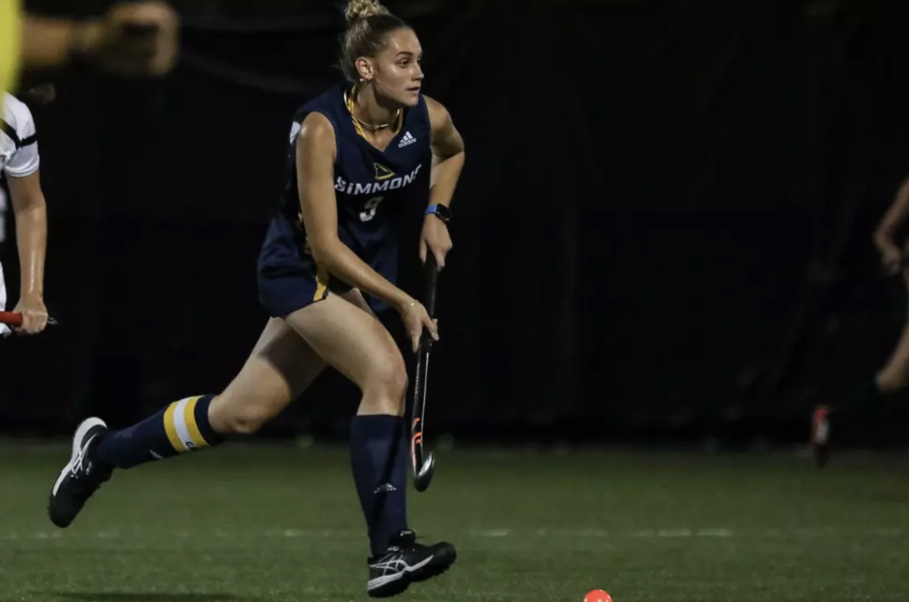
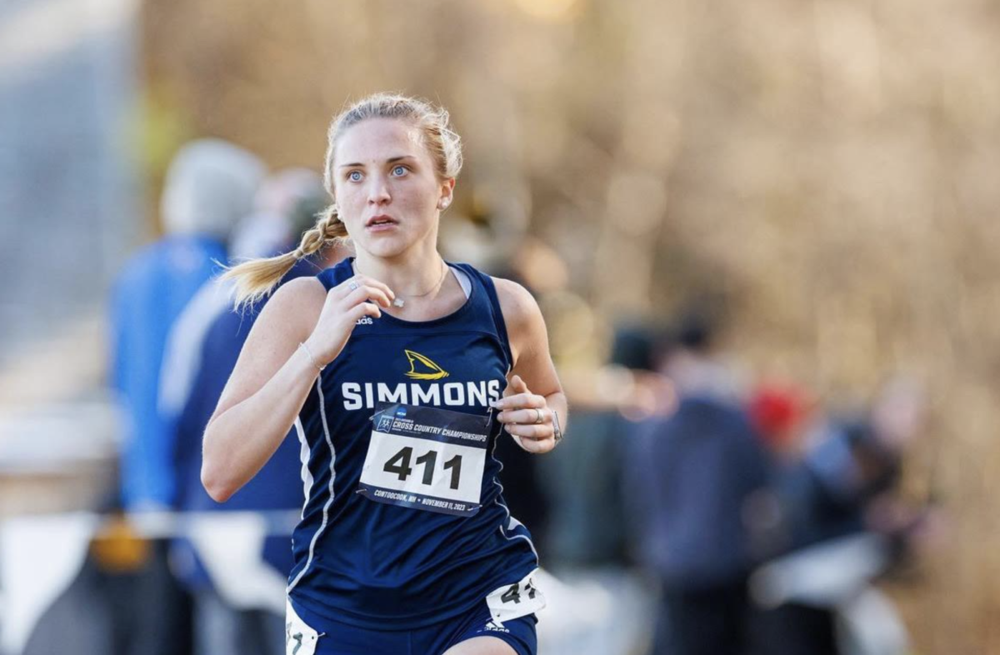

COURTNEY SWEENEY
Computer & Data Science | DevOps Intern | Published Journalist | Simmons University
About Me
Hello! My name is Courtney Sweeney, and I am a senior at Simmons University in the Honors Program studying Computer Science and Data Science. After initially applying to colleges as a Communications major, I took Foundations of Information Technology during my second semester of my freshman year and realized my passion for Computer Science. My coursework has given me the opportunity to explore a variety of different languages and fields, including introducing me to Data Science and its real world applications, which led me to my double major.
Throughout my time in college, I have been able to create projects about topics that I am passionate about, most notably about women’s soccer. As a collegiate soccer player myself, I know that there is a lack of research and funding in women’s soccer and have done multiple projects that focus solely on the women’s game without having it as a last minute addition to a project on sports.

Selected Works
Stranger Things: An Analysis of Sentiment, Location, and Character Interaction
An end-to-end ML pipeline project analyzing the interaction between character, location, and sentiment in the first two seasons of Stranger Things.
Simmons University Sports Management Program
An article written for The Simmons Voice on the recently announced Women's Sports Management Program at Simmons. This article was featured in WBUR's "What we are reading" section alongside article from The New York Times and The Boston Globe

Field Hockey Feature Article
An article written for The Simmons Voice about two seniors who were career standouts for Simmons' field hockey team.

Guitar Hero Game
A guitar hero game coded entirely in C++ with the terminal as the interface, utilizing threads to run concurrent functions.

Track Addition Article
An article written for The Simmons Voice about the addition of indoor and outdoor varsity track teams for the 2024 season.
Women's Soccer Analytics
Analyzing funding disparities and performance metrics using XML & Python.
The intersection of sports performance and linear algebra using Markov chains
A project that explores how linear algebra can be applied to predict performance in women's soccer.

C++ Github Tutorial
A full tutorial of C++ syntax, etc...
Experience
Simmons University
Learning Assistant for CS-330: Structure and Organization of Programming Languages | Boston, MA | September 2025 - December 2025
- Led technical debugging sessions focused on common pitfalls in functional programming, including immutability, recursion, and higher-order functions in Scala
- Code-reviewed student projects to ensure strict adherence to paradigm-specific best practices, differentiating between imperative control flow and object-oriented framework
Revvity
DevOps Intern | Waltham, MA (Remote) | May 2025 - August 2025
- Engineered a full-stack cloud management portal using Angular and Python Lambdas, enabling users to programmatically provision S3 buckets and manage secure file uploads/deletions without direct console access
- Built an automated GenAI data pipeline for Amazon Bedrock, implementing Lambda triggers that automatically sync Knowledge Bases whenever new documents are uploaded to the connected S3 data sources
- Developed secure API integrations to handle sensitive infrastructure requests, creating a streamlined workflow for provisioning vector stores and linking them to internal knowledge repositories
Simmons University
Learning Assistant for CS-112: Introduction to Programming Languages | Boston, MA | September 2024 - December 2024
- Trained students in technical troubleshooting using VS Code, teaching them to isolate logic errors using breakpoints, call stack analysis, and strategic print debugging.
- Coached students on iterative development, guiding them to decompose complex problems into small, testable modules ("chunking") to ensure code stability and maintainability.
City of Marlborough
Information Technology Intern | Marlborough, MA | June 2024 - August 2024
- Maintained engineering laboratory hardware, configuring and updating HP laptops
- Performed hardware repairs on a fleet of 1,000+ Chromebooks, diagnosing physical defects and executing screen and keyboard replacements.
Skills
Study Abroad
In the spring of 2025, I studied abroad in Dublin, Ireland at the University College Dublin. While in Ireland, I was completely immersed in Irish culture. I attended events for St. Brigid's Festival in Ireland, took a class on Ireland's British Centuries, and traveled to small towns like Bray and Sligo.
I also had the opportunity to travel around Europe and visit a variety of different countries, including Italy (Rome), England (London), Northern Ireland (Belfast), France (Paris), Germany (Berlin), Denmark (Copenhagen), the Netherlands (Amsterdam), and North Macedonia (Skopje and Tetovo).